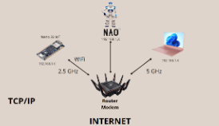

PROBLEMATICHE
Collegamento Nao e Arduino alla rete
Per fare funzionare correttamente il nostro programma era necessario collegare l’Arduino
e il Nao ad un router affinchè potessero accedere al wifi per collegarsi al sito della Decathlon
così da poter accedere al catalogo dei prodotti.
La problematica che abbiamo riscontrato è stata quando abbiamo cercato di collegare il Nao
e l’Arduino ad un router esterno, i due si collegavano correttamente, invece quando provavamo
a collegarli all’hotspot del pc il nao si collegava e funzionava correttamente mentre invece l’arduino non dava segni di rilevamento.
NAO in lingua italiana
Mentre stavamo sperimentando col Nao, abbiamo riscontrato un problema che, successivamente,
abbiamo scoperto non fosse dovuto a noi ma all’assistenza del Nao.
Questo problema consisteva nel fatto che il nao non riusciva più a collegarsi al cloud dal quale prendeva
le informazioni e così non riusciva più a eseguire certe funzionalità come parlare in lingua italiana.
L’assistenza del Nao non è riuscita a risolvere questa problematica riguardante il collegamento al Nao con
l’ icloud che gli permetteva di scaricare le funzioni base per il funzionamento, di conseguenza ci siamo adattati e
abbiamo creato l’intero progetto in lingua inglese, tra l’altro questa scelta è stata fatta anche in base al fatto
che la decathlon non è una catena unicamente italiana, di conseguenza per coinvolgere più persone lo abbiamo progettato e creato in lingua inglese.
Lettore RFID
Abbiamo riscontrato una problematica riguardante il le tessere che venivano lette dal lettore RFID ovvero,
dato che ad ogni tessera corrispondeva un nome era molto difficile programmare il robot Nao a dire il nome della persona corrispondente alla tessera
di conseguenza per risolvere tutto ciò abbiamo anche qui implementato un database il quale, deve ricevere
dall’arduino il codice della tessera e confrontare il codice con il nome presente nel data base e mandare
un segnale al Nao inviandogli il nome della persona.
Blocco choregraphe socket python
Stagioni
Mentre stavamo lavorando al nostro progetto ci siamo accorti di una problematica a cui non avevamo pensato ovvero,
ad ogni stagione che passa cambia la dispozione degli articoli all’interno del negozio di conseguenza bisognava
trovare una soluzione per poter aggiornare facilmente il nostro programma a questa evenienza per risolvere tutto
ciò abbiamo collegato il Nao ad un raspberry sul quale abbiamo creato un database, tramite quest’ultimo abbiamo
reso così più semplice aggiornare le corsie dato che la foto che mostrava come accederci rimaneva invariata per ogni
corsia e veniva aggiornato solo il suo nome in base agli articoli che venivano riposti all’interno della corsia.
